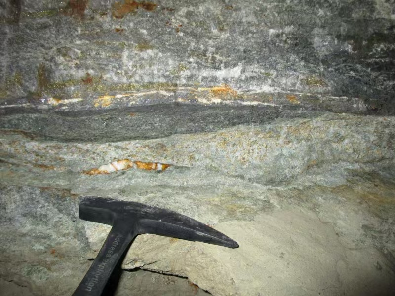
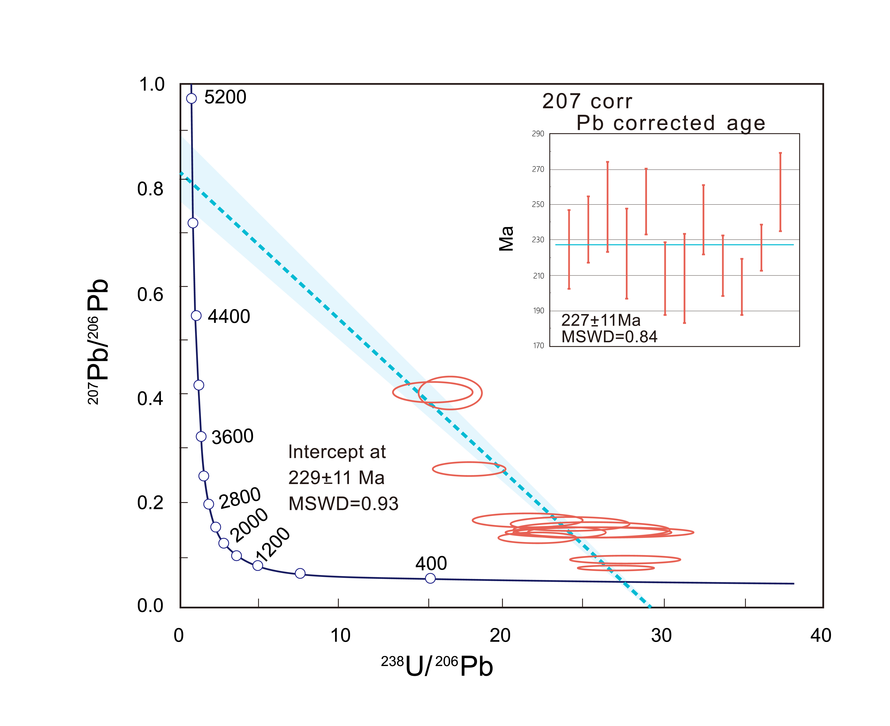

Chen Tingyi | Chitty
About Me
I am a PhD student at the National Space Science Center, Chinese Academy of Sciences, specializing in planetary geology and petrology. My research focuses on Martian meteorites, including petrology, mineral chemistry, geochronology, and mantle source tracing, with additional experience in experimental simulations of lunar regolith space weathering. I hold a Bachelor's degree in Resource Exploration Engineering from China University of Geosciences (Wuhan), with training in petrography, mineralogy, 3D orebody modeling, and field-based geological investigations.
During my PhD training, I aim to integrate experimental and analytical techniques in the study of planetary and terrestrial materials, while maintaining interests in resource exploration and sustainable development. I value collaborative research and am committed to continuous learning and active contribution to team-based scientific work.
Thank you!
Research Interests
- Planetary Chemisty: martian meteorites, space weathering simulation
- Resource Exploration Engineering(Solid minerals): mineral exploration evaluation, mineralization analysis, 3D Orebody Modeling
- Extraterrestrial In-situ Resource Utilization (eISRU): ilmenite utilization, helium-3 extraction
Awards
- [Jun. 2023] National Outstanding Undergraduate Thesis (National Top 5%) Certificate
- [Dec. 2022] Academician Scholarship for Postgraduates
- [Sep. 2022] TianTu Overseas scholarship
- [Sep. 2021] Outstanding Talent Scholarship for Postgraduate
- [Feb. 2021] Asia-Pacific Mathematics Competition for Colleges and Universities(Third Prize)
- [Jun. 2020] Outstanding Student Leader
Academic Projects
-
 NSSFC
Simulation of Space Weathing Effects on the Structural Modification of Lunnar Soil Mineral ParticlesCollege Students' Innovative Entrepreneurial Training Plan Program, 2023.Final Research Report Completed
NSSFC
Simulation of Space Weathing Effects on the Structural Modification of Lunnar Soil Mineral ParticlesCollege Students' Innovative Entrepreneurial Training Plan Program, 2023.Final Research Report Completed -
 SASTID
Preliminary Reasearch Project For State Administration of Science, Technology and Industry for National Defence, (SASTID), 2023.Final Research Report Completed
SASTID
Preliminary Reasearch Project For State Administration of Science, Technology and Industry for National Defence, (SASTID), 2023.Final Research Report Completed -
 NSSFCCollege Students' Innovative Entrepreneurial Training Plan Program, 2022.Certficate Field Record Photo Completed
Publications
-
 In preparationIn the process of wirting a submission(English version)A stage-Based Study In preparation
 Acta Mineralogica Sinica
Acta Mineralogica Sinica (Chinese version)Publication Completed
Acta Mineralogica Sinica
Acta Mineralogica Sinica (Chinese version)Publication Completed B.Eng. Thesis
Bachelor's Thesis Submitted to China university of Geosciences, 2023.Thesis Certificate National Excellent Undergraduate Thesis
B.Eng. Thesis
Bachelor's Thesis Submitted to China university of Geosciences, 2023.Thesis Certificate National Excellent Undergraduate Thesis
Practical Research or Work experiences
Lab Technician Intern
Thermo Fisher FTIR Infared Spectrometer Installation and Testing, 2024 Field Geology Intern
Geological Exploration on Zigui county, Hubei, 2021 Field Record | Certificate
Geological Exploration on Zhoukoudian, Peking Man site, 2021 Certificate
Geological Exploration around Wuhan City, 2020 Field Geological Survey Report
Volunteer & Exchange
-
Earthquake Reconstruction at Lushan, Sichuan
Experimental Analysis and Software Skills
Programming & Software
- Skilled in Python, Mtalab, Arcmap, Omnic, and other data analysis tools
Analytical Instrumentation
- Proficient in operating advanced analytical instruments, including: - NOVA NanoSEM 450
- Thermo Scientific Apreo S SEM
- Thermo Scientific FTIR Infared Spectrometer
- JEOL JXA-8230 Electron Probe Micro-Analyzer (EPMA)
- Inductively Coupled Plasma Mass Spectrometry (ICP-MS)
- Secondary Ion Mass Spectrometry (SIMS)
- Cameca NanoSIMS 50L (NanoSIMS)
- Laser Ablation Inductively Coupled Plasma Mass Spectrometry (LA-ICP-MS)
Comprehensive Knowledge
- In-depth understanding of analytical techniques for both terrestrial and extraterrestrial rock samples - Field Investigation Techniques
- Rock Hand Specimen Analysis
Speciality
Musical Instrument
- Violin
Guzhen(Chinese instrument) Guitar
Sports
- Basketball
- Shooting (10m Air Pistol and 10m Air Rifle)
wimming (Freestyle and Back-stroke)
Others
Powered by Jekyll and Minimal Light theme.
 CHINA
CHINA
 BRITAIN
BRITAIN
 CHINA
CHINA
{kind=link}
{kind=link}
{kind=link}
{kind=link}
{kind=link}
{kind=link}
{kind=link}
{kind=link}
{kind=link}
{kind=link}
{kind=link}
{kind=link}